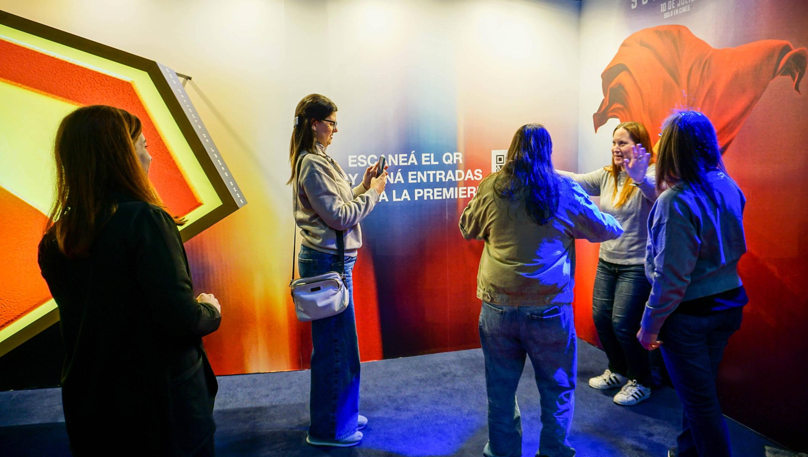
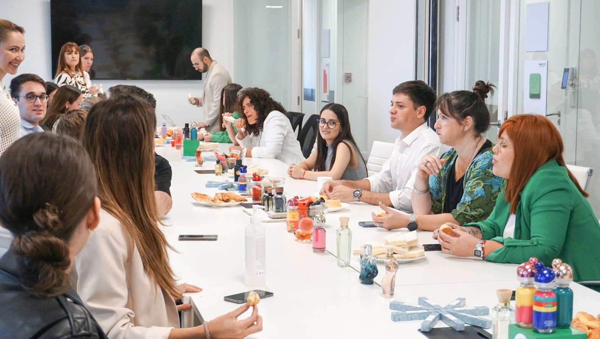
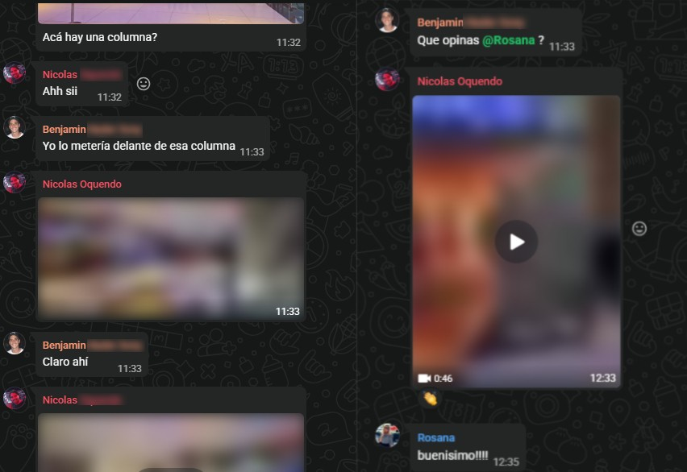
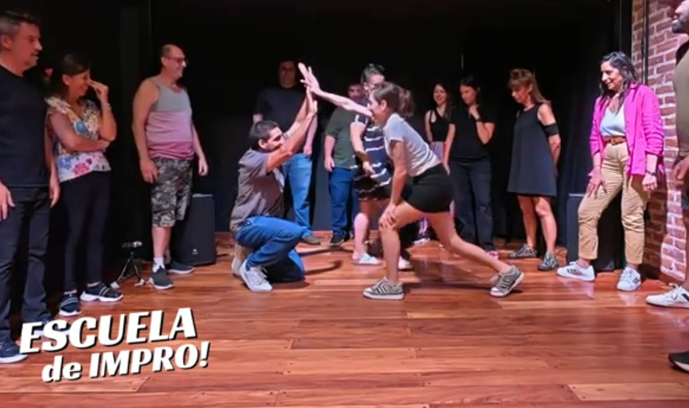
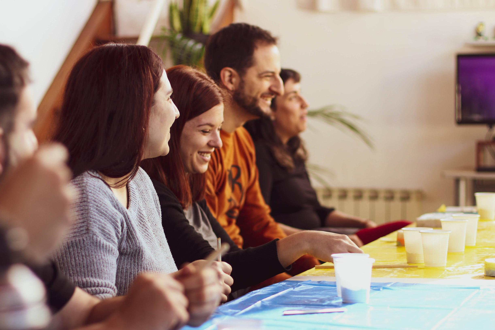
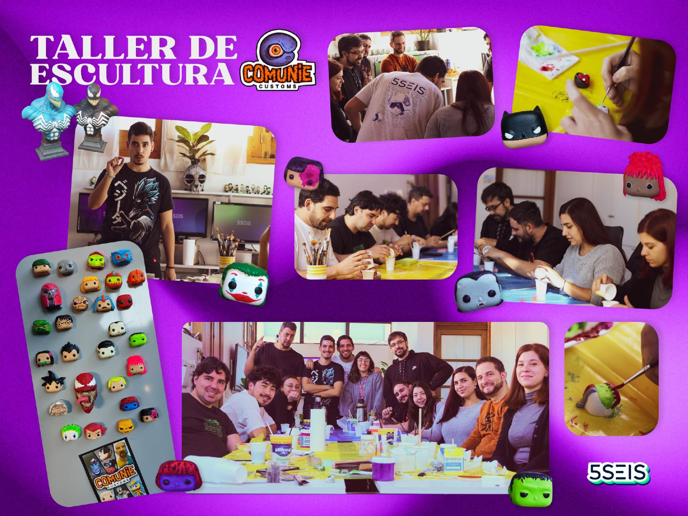
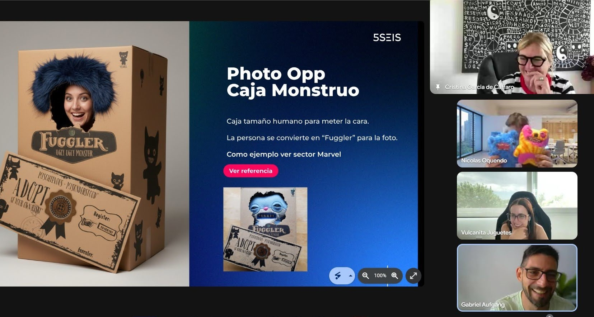

Diseñar experiencias humanas
en un mundo tecnológico

15 años
Productos
+
Equipos
+
Conversaciones
Empecé a observar
¿Qué nos revela esto sobre las personas?

Observación 01
Las personas
recuerdan experiencias
recuerdan experiencias
Toda experiencia comunica

Observación 02
Las conversaciones
dejan huellas
dejan huellas

¿Qué nos revela esta conversación?
Observación 03
Conversando
construimos realidades
construimos realidades
Disponibilidad
↓
Validación
↓
Construcción
↓
Transformación

A
+
B
↓
C


Observación 04
Diseñamos espacios para que las personas conversen

¿Qué estamos diseñando realmente?
¿Qué experiencias estás creando hoy?
¿Con quiénes? ¿Para quiénes?
Las organizaciones no se transforman cuando aparece una gran idea
Se transforman cuando las personas construyen sobre las ideas de los demás
Se transforman cuando las personas construyen sobre las ideas de los demás
GRACIAS